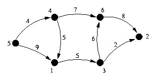
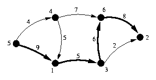
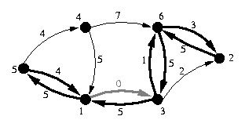
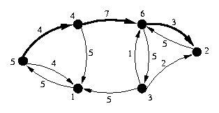
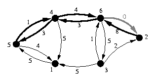
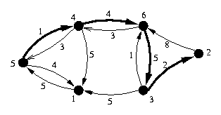
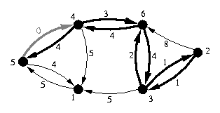
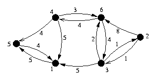

这是几乎全部机翻的版本。几乎可以肯定的是，这个翻译需要改进。
网络流真难……
前置知识
- 最短路
问题
给定一个具有整数权重的连通图，以及一个源结点和一个汇结点。
每条边的权重表示该边的“容量”。穿越该图的一个流通过为每条边分配一个整数流量构成，且满足：
- 通过每条边的流量不超过每条边的容量。
- 除了源和汇之外的结点，输入流量等于输出流量。
最大化源结点的输出量减输入量（或汇结点的输入量减输出量）。
例子
给定水管集合的布局，以及每个管道的容量。这些管道中的水必须向下流动，因此在每个管道内，水只能沿一个方向流动。
计算从给定的起点（净水厂）到给定的终点（您的农场）可以流动的水量。
算法
该算法（贪婪地）通过迭代地添加从源到汇的流量来构建网络流。
开始时，将每条边的权重都置为初始权重（边的权重等于该边中还没有用完的容量）。
给定当前的图，找到一条在当前图中从源到汇的只经过非零权重的边的路径。计算能通过该路径的最大流量，记为PathCap。
对于路径上的每条边，将该边的容量减去PathCap。除此之外，添加容量等于PathCap的反向边（连接两个相同结点但方向相反的边）；如果反向边已经存在，只需增加其容量。
继续添加路径，直到找不到更多路径位置。
这个算法必然可以终止，因为每次都至少增加一个单位的流量（因为权重总是整数），且流量是严格单调递增的。增加反向边的方法和减少路径上的流量是等价的。
如果你想对这个算法做一个更详细的分析，请去查Sedgewick的书。
下面是算法伪代码：
1 | 1 if (source = sink) |
这个算法伪代码看起来有些令人头疼……总的来说，这是一种Ford–Fulkerson算法。而且是一种用修改过的Dijkstra算法进行Maximum capacity augmentation的算法。反向边的必要性我还没有完全理解，不过反正加了之后求的也只是min，所以没什么意义……
上述算法的复杂度是O(FM)，其中F是最大流量，M是边数。实际运行时间一般会比这好得多，因为算法每次都尽可能地增加流量。
为了确定每条边的流量，将起始容量和最终容量比较。如果最终容量更少，则差值就是穿过该边的流量大小。
上述算法可能会产生“漩涡”，即对总体流量没有贡献的环。
执行示例
考虑以下网络，其中源是结点5，汇是结点2。

具有最高容量的路径是{5,1,3,6,2}。

此路径上的瓶颈边为1->3，其容量为5。因此，将路径上的所有边的容量减少5，并将反向弧的容量加5（如果需要，创建边）。于是得到下图：

在新图中，容量最大的路径是{5,4,6,2}。

此路径的容量为3，因此再次将前向边的容量减少3，并将反向边的容量增加3。

现在网络的最大容量路径为{5,4,6,3,2}

这条路径的容量仅为1，因为从5到4的边的容量为1。再次适当地更新前向和后向边。

生成的图没有从源到汇的路径。从源结点5可到达的唯一节点是结点5本身和结点1。

该算法增广了三次流，第一次容量为5，第二次容量为3，最后一次容量为1。因此，网络中从结点5到结点2的最大流量是9。
扩展
网络流问题是非常容易扩展的，主要是通过对图的修改。
为了扩展到无向图的情况，简单地将无向边扩展为方向相反的两条边。
如果要限制通过每个结点的流量，将每个结点拆分为两个结点，即in-结点和out-结点。将所有入边连到in-结点，并将所有出边连出out-节点，并在in-结点和out-结点之间连接一条边，其容量等于结点的容量。
如果你有多个源和汇，请创建一个“虚拟源”和“虚拟汇”，其中包含从虚拟源到每个源的边和从每个汇到虚拟汇的边。让每条添加的边具有无限的容量。
如果边的权重是实数，那么这个算法不再保证能够终止，尽管它会渐近逼近最大值。
其他问题
网络流也可用于解决不那么明显的其他类型的问题。
最大匹配
给定两组对象（称为A和B），你希望尽可能多地“匹配”单个A对象和单个B对象，且受到一定的限制（对象A1可以与对象B3匹配，但不是对象B1或B2）。这称为“最大匹配”问题。
要将这个问题重新表示为网络流问题，创建一个源，从该源到每个A对象连接一条容量为1的边。创建一个汇，从每个B对象连接一条容量为1的边到汇。此外，如果对象Ai和Bk可以匹配在一起，则添加一条从Ai到Bk的容量为1的边。现在运行算法，并确定A和B之间的哪些边被使用了。
最小割
给定带权无向图，求能够分离两个给定结点的具有最小总权重的边集。
最小总权重恰好是这两个结点之间的流量。
为了确定路径，尝试按权重递增的顺序删除每条边，并查看它是否减少了网络流量（如果是，它应该使得流量减去这条边的容量）。第一条这样的边是最小割的一部分，在没有这条边的情况下在图上迭代算法。
说实话这段我没太看懂……
这可以通过与容量有限的结点相同的技巧扩展到结点切割。有向图的方法相同。然而，它无法解决找到所谓的“最佳匹配”的问题，其中每个配对都具有“良好”值，并且您想要创建具有最高总体“良好”的匹配。
例题
如果问题涉及最大化从一个位置到另一个位置的物体的移动或流动，则几乎可以确定是最大流。如果它试图最小化两个项目，它可能是最小割。如果它谈论最大化任何类型的东西（人，物，钱，等等）的配对，它可能是最大匹配。
病毒流
有一个计算机网络，通过电线将各个机器连接在一起。数据可以在电线上的任一方向流动。遗憾的是，网络上有一台计算机已经感染了病毒，因此您需要将此计算机与中央服务器分开以阻止此病毒的传播。考虑到关闭每对机器之间的网络连接的成本，计算必须花费的最小金额来将受污染的机器与服务器分开。
这正是最小割问题。
伐木工人调度
不同类型的树木需要不同的技术来使伐木工人适当地采伐树木。收获一棵树需要30分钟，与树木和伐木工人无关。给定伐木工人的集合，以及每个人能够正确砍伐的树木类型，以及树木的集合，计算在下一个半小时可以砍伐的最大树木数量。
每个伐木工人都可以与他/她能够适当收获的每棵树配对。因此，可以使用最大匹配算法来解决该问题。
电话通信（USACO Championship 1996）
给定一组计算机，以及计算机之间运行的电线，在两台给定机器无法通信之前，可能崩溃的最小机器数是多少？假设两台给定的机器不会崩溃。
这相当于最小割问题。两台给定的机器可以任意标记为源和汇。电线是双向的。将每个节点拆分为in-节点和out-节点，这样我们就可以将通过任何给定计算机的流量限制为1。现在，通过该网络的最大流相当于最小割。
要实际确定割，请迭代删除节点，直到找到降低网络容量的节点。
科学博览会评委
科学博览会有N个类别和M个评委。每位评委都愿意给某些类别打分，每个类别都需要一定数量的评委。每位评委只能在特定的科学博览会上评判一个类别。您可以根据这些限制分配多少名评委？
这与最大匹配问题非常相似，只是每个类别可以接收多个法官。最简单的方法是将从类别到汇的边的容量增加到所需的评委数量。
油管规划
考虑到阿拉斯加管道的布局（管道的容量以及管道如何连接在一起）以及每个交叉口的位置，你希望增加朱诺和费尔班克斯之间的最大流量，但是你只有足够的钱增加一个容量为X的管道。此外，管道只能长为10英里。应该在哪两个交叉点之间添加这个管道以增加流量？
为了解决这个问题，对于彼此相距10英里内的每对交叉点，计算如果在交叉点之间添加管道，朱诺和费尔班克斯之间增加的流量。每一个子问题都是最大流。